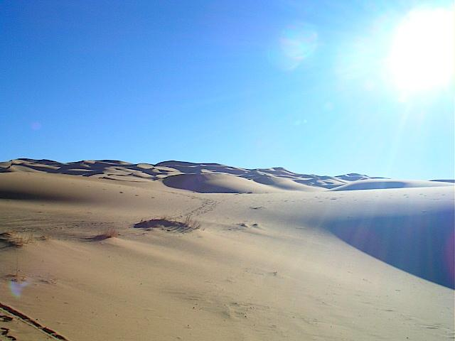

Children Of Hard Times
Mr.Adil Alamin
- “Oh
Haj Mohammed .My baby is thirsty"
"be
patient oh woman"
The
homeless drag on the burning sand towards the west. Long line like a
brackish
long snake to a red endless horizon of set sun which never give any sign of
hope.
They are sweating.
Crying of children breaking the silence with howling wind
around.
Men were looking back in anger while
after while.
-
“Oh Haj Mohammed. What a pity!!! Our son whom we aim to be a doctor at
Khartoum
is
dying by now."
-
“Shut up you crazy woman. Is it
the right time to say something like that." People
standby
and Alhassania play"
Endless
ocean of sand, burning sun and precision of misfortune; people walking upon
semi
arid dune at west of Sudan in Darfur.
Accompanied
with old men and women, in agony children die. Falling down like welting
leaves
on their way to escape. They were attacked by falcons in a feast of disaster,
that
never
happened before .... oh alas, the Mahadia hysterical worriers die like that...
-
“Oh Haj Mohammed our son died”
-
“Oh Allah the merciful”
They
stopped. Red beams of sun-set paint their tired faces with it's marvelous dye.
The
flocks
of birds vanish away from the above. To continue tomorrow that may never come.
They
buried the child in small grave in wicked and merciless sand . They pray upon
his
soul
to be rest in peace in paradise. They scattered around.
Laying and gazing at the
smiling
stars. Thinking about their dark
future. Weeping women gathered not
far from
them.
Men discussing with the leader how to escape from this hell.
In
the morning the snake start dragging westward.
When even they pass a dune,
another
one stand against them.
-
“Oh Haj Mohammed .Are we lost?!”
-
“Damn woman.... Be patient. Allah will salivate us.”
Allah
the merciful help them very soon. Suddenly
the flocks flew away. Falcons have
seen
Something what they can't. They fed up of finding another prey, because flags of
United
Nations at Chad border appear after they crossed the last dune. Camps were
set
for them, where they live only because
death has not come
yet.
‘This was the
last time, when men look back in anger, children
die and women cry
during the hard times of
sorrow!!!
Note: a Sudanese saying
A writer from Sudan lives in Yemen
Note: For a Link to his English translation Blog, See Links Page